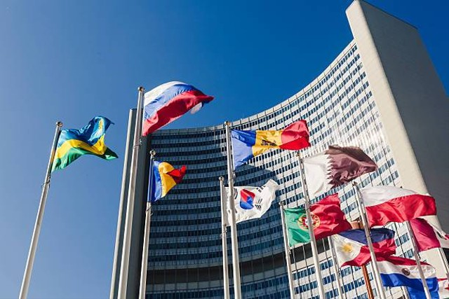
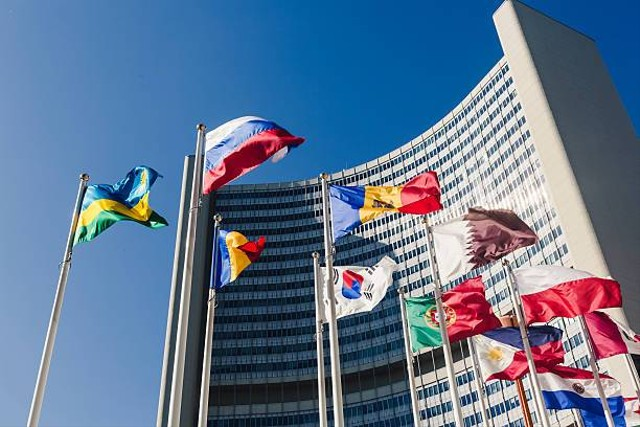
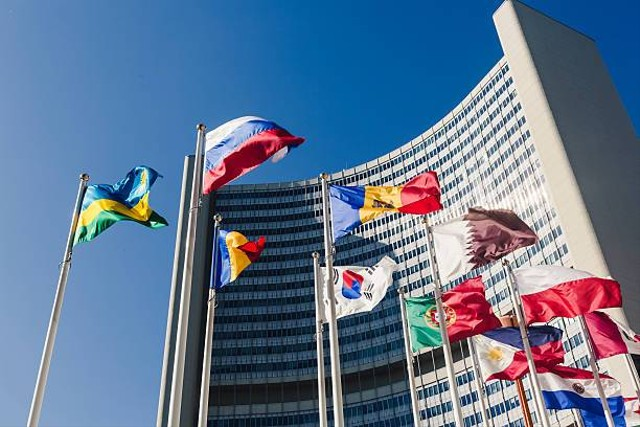

Kolaborasi antara Indonesia dan Amerika Serikat di berbagai forum internasional yang diselenggarakan di Kanada menunjukkan pentingnya kerja sama trilateral yang melibatkan ketiga negara. Kanada, sebagai tuan rumah berbagai konferensi dan forum internasional, sering kali menjadi tempat bertemunya perwakilan Indonesia dan Amerika Serikat untuk membahas isu-isu strategis yang menjadi kepentingan bersama. Lingkup kolaborasi ini mencakup ekonomi, keamanan, serta hak asasi manusia, dan memainkan peran penting dalam menjaga stabilitas dan pertumbuhan di kawasan Indo-Pasifik dan dunia secara lebih luas.

1. Kerja Sama Ekonomi dalam Forum Ekonomi Kanada
Kanada sering mengadakan berbagai pertemuan ekonomi yang bersifat internasional, seperti Forum Ekonomi Internasional Amerika (International Economic Forum of the Americas) dan Konferensi Montreal. Dalam forum-forum ini, perwakilan dari Indonesia dan Amerika Serikat terlibat dalam diskusi mengenai:
Penguatan Perdagangan dan Investasi Bilateral:
AS dan Indonesia sering bertemu untuk membahas upaya memperkuat hubungan dagang, investasi, dan pengembangan ekonomi yang inklusif di tengah tantangan global seperti resesi dan perubahan iklim. Kanada sebagai tuan rumah menyediakan platform bagi kedua negara untuk memperkuat hubungan dagang mereka dalam konteks internasional.
Kerjasama Teknologi dan Inovasi:
Dalam forum-forum yang membahas inovasi dan teknologi digital, perwakilan Indonesia dan AS sering kali terlibat dalam diskusi mengenai transformasi digital, perkembangan teknologi hijau, dan upaya meningkatkan daya saing ekonomi digital. Kanada, dengan ekosistem teknologinya yang maju, menyediakan contoh praktik terbaik yang dapat diadopsi oleh kedua negara.
2. Keamanan dan Stabilitas Regional di Indo-Pasifik
Kanada, sebagai negara anggota ASEAN Regional Forum (ARF) dan mitra dialog ASEAN, sering kali mengundang Amerika Serikat dan Indonesia untuk berpartisipasi dalam diskusi yang berkaitan dengan keamanan regional. Topik yang sering menjadi fokus meliputi:
Keamanan Maritim:
Pertemuan di Kanada memberikan kesempatan bagi Indonesia dan Amerika Serikat untuk mendiskusikan keamanan maritim di kawasan Indo-Pasifik, termasuk masalah sengketa Laut China Selatan dan upaya menjaga jalur perdagangan yang bebas dan terbuka.
Melawan Terorisme dan Ekstremisme:
Kanada, Indonesia, dan Amerika Serikat memiliki kepentingan bersama dalam memerangi terorisme dan ekstremisme. Dalam forum keamanan internasional seperti Global Counterterrorism Forum (GCTF) yang pernah diselenggarakan di Kanada, ketiga negara sering membahas strategi kolaboratif untuk mengatasi ancaman terorisme global, berbagi intelijen, dan meningkatkan kapasitas negara-negara di kawasan dalam penanggulangan terorisme.
3. Isu Lingkungan dan Perubahan Iklim
Kanada sering menjadi tuan rumah bagi pertemuan internasional yang berfokus pada isu lingkungan dan perubahan iklim, seperti Konferensi Perubahan Iklim PBB (COP) atau konferensi lingkungan yang lebih spesifik. Dalam konteks ini, Indonesia dan Amerika Serikat sering terlibat dalam diskusi yang difasilitasi oleh Kanada mengenai:
Pengurangan Emisi Karbon:
Indonesia, sebagai negara dengan hutan hujan tropis terbesar di Asia, dan Amerika Serikat sebagai salah satu penghasil emisi terbesar, memiliki kepentingan dalam diskusi mengenai pengurangan emisi dan konservasi hutan. Kanada berperan sebagai mediator yang mendorong kesepakatan konkret terkait pendanaan proyek hijau dan upaya mitigasi perubahan iklim.
Investasi dalam Energi Terbarukan:
Kanada sering memfasilitasi dialog mengenai transisi energi bersih antara Indonesia dan Amerika Serikat, mendorong investasi dalam proyek energi terbarukan seperti tenaga surya, angin, dan biomassa. Ketiga negara berkolaborasi dalam berbagi teknologi dan pengalaman untuk mempercepat transisi ke ekonomi hijau.
4. Hak Asasi Manusia dan Demokrasi
Kanada dikenal sebagai pendukung kuat hak asasi manusia dan demokrasi di panggung internasional. Dalam berbagai konferensi yang diadakan di Kanada, seperti World Movement for Democracy dan pertemuan International Human Rights Conference, Indonesia dan Amerika Serikat sering kali berpartisipasi dalam diskusi yang mencakup:
Perlindungan Hak Asasi Manusia di Asia Tenggara:
Dalam forum ini, Kanada mengundang kedua negara untuk berdiskusi mengenai langkah-langkah untuk melindungi hak-hak kelompok minoritas, termasuk pengungsi, masyarakat adat, dan kelompok rentan lainnya di kawasan Asia Tenggara. Indonesia dan AS terlibat dalam upaya memperkuat perlindungan hukum dan mendorong praktik terbaik dalam penegakan hak asasi manusia.
Kebebasan Pers dan Kebebasan Berbicara:
Kanada sering menjadi tuan rumah konferensi internasional yang mendukung kebebasan pers. Perwakilan dari Indonesia dan Amerika Serikat berkolaborasi untuk mempromosikan kebebasan berekspresi dan melawan sensor yang mengancam demokrasi. Mereka juga membahas cara-cara memperkuat peran media dalam menjaga demokrasi yang sehat.
5. Kolaborasi dalam Forum Multilateral Seperti G7 dan G20
Kanada sebagai anggota G7 dan tuan rumah beberapa pertemuan G7 memberikan ruang bagi Indonesia, sebagai negara yang diundang dalam kapasitas tertentu, dan Amerika Serikat untuk berkolaborasi dalam membahas isu-isu global seperti:
Pemulihan Ekonomi Global:
Ketiga negara sering terlibat dalam diskusi terkait langkah-langkah pemulihan ekonomi setelah pandemi COVID-19, termasuk strategi untuk memitigasi dampak ekonomi dan sosial jangka panjang.
Ketahanan Pangan dan Krisis Kemanusiaan:
Diskusi mengenai ketahanan pangan global juga sering terjadi, dengan Kanada memimpin inisiatif untuk mendorong bantuan pangan internasional, di mana Indonesia dan Amerika Serikat berperan dalam menyusun strategi dan implementasi bantuan kemanusiaan di negara-negara terdampak.
 
